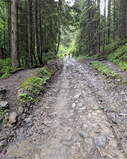

Початок
Гори… На них не можливо дивитись без захвату. Вони починаються тут, під самісінькими твоїми ногами, з невеличких кущиків чорниць і стрункими високими травинками, що закінчуються тугими колосочками, на яких, мов на струнах, грає вітер, перетворюючи простір навколо тебе на схвильоване, соломино - зелене море.
Коли око вже не в змозі вловити того хвилювання, видається, що ті гори вкриті ніжним блідо – салатовим оксамитом, а далі… далі, де гірські верхівки ніжяться в лагідних густих білих хмарках, гори набувають пронизливого, сизо-голубого кольору...
Для того, щоб піднятись до підніжжя гори, потрібно пройти всього лиш, 4 кілометри рівної дороги.
А далі відбувається найцікавіше...
